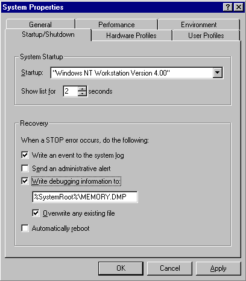

Recording Physical Memory Dump
This procedure describes how to record the correct information after a Physical Memory Dump on the console PC.
This procedure describes the steps to record the correct information when a Physical Memory Dump occurs on the console PC.
-
Record the Physical Memory Dump text.
- Record the first five lines of text displayed on the PC monitor following the Physical Memory Dump.
- Record the system status at the time of the event (Ready, Running, Printing, etc).
- Record which user interface screen, operation, or function button was in use at the time of the event.
- Reboot the PC and record whether the memory dump reoccurs.
- If the memory dump reoccurs, then reboot the PC. Press and hold the[Ctrl] key while Windows NT launches. Record whether this action prevents the memory dump.
-
Retrieve the files associated with the Physical Memory Dump.
- If the user interface is accessible following the memory dump and a pcAnywhere connection is not available, then perform an immediate backup. Return the tape for analysis by software engineering.
-
If Windows NT is accessible and a pcAnywhere connection is available, then file transfer the:
- C:\winnt\drwtsn32.log file.
- C:\NexStep\PC\DRW\Reports folder.
- C:\NexStep\PC\DRW\NexStepBase folder.
-
If Windows NT is accessible, a pcAnywhere connection is available, and the memory dump event is repeatable, then:
- Enable Memory Dump logging (as shown in the next section).
- Reboot the PC to create the memory dump text file.
- Reboot the PC to return to Windows NT.
- Transfer the C:\winnt\MEMORY.DMP file.
-
Enable memory dump logging.
Note: If the error is expected to reoccur and more information is required for analysis, enable memory dump logging.
- Right-click the My Computer icon, and select Properties > Startup/Shutdown.
-
Configure the recovery properties to:
- Write an event to the system log.
- Not send an administrative alert
- Write to the default %SystemRoot%\MEMORY.DMP.
- Overwrite any existing file.
- Not Automatically Reboot.

- Select OK to save the changes and exit the System Properties window.
- When the memory dump reoccurs, download the C:\MEMORY.DMP file for analysis, and then disable the memory dump logging to return the system to the original state.